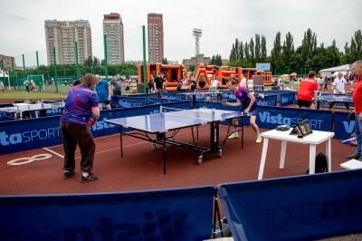

Качественно
Многолетний опыт, высокий уровень качества и индивидуальный подход.
Проведение спортивных праздников и соревнований любого уровня в Москве и регионах.
Узнать стоимость →Для проведения соревнований и спортивных праздников.
Профессиональное обеспечение безопасности участников.
Электронное хронометрирование мероприятия, судейская группа до 10 человек.
Обработка стартовых и итоговых протоколов.
Профессиональное фото-сопровождение мероприятия.
Яркая оградительная сетка, конусы, разметочные фишки и рекламные баннеры.
Снегоходом «Буран» и снегоуплотняющей машиной «Ратрак».
Доставка судейского оборудования в пределах Москвы и прилегающих областей.
Подбор и закупка медалей, кубков и грамот. Возможно нанесение эксклюзивных эмблем и надписей.
Подготовка и проведение открытия и закрытия спортивного праздника, награждение участников.

На закрытых и открытых площадках, в парках и на природе.
Пешие, лыжные, водные, велосипедные и горные.
 Лыжные гонки
Лыжные гонки Лыжероллеры
Лыжероллеры Trail Running
Trail Running Биатлон
Биатлон Полиатлон
Полиатлон Конькобежный спорт
Конькобежный спорт Nordic walking
Nordic walking Спортивная ходьба
Спортивная ходьба Легкая атлетика
Легкая атлетика Многоборье ГТО
Многоборье ГТО Плавание
Плавание Велогонки
Велогонки Спартакиады
Спартакиады Автогонки
Автогонки Подвижные игры
Подвижные игры Игровые виды спорта
Игровые виды спортаМноголетний опыт, высокий уровень качества и индивидуальный подход.
Квалифицированные судьи, тренеры и инструкторы с профильным образованием.
Создание концепции и программы мероприятий различного уровня.
Точный, надежный и оперативный хронометраж.
Подготовка лыжных трасс и оборудование соревновательных зон.
Гибкий подход к формированию стоимости услуг.
Принцип fair play и гарантия отличного настроения.
Очень нравится, когда комментирует соревнования лично Ирина Анатольевна!
Отличная организация соревнований!
Спасибо команде Арта-Спорт за чудесный фестиваль лыжероллерных дисциплин 2021!